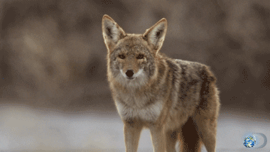

The coyote is a medium-sized member of the dog family that includes wolves and foxes. With pointed ears, a slender muzzle,
and a drooping bushy tail, the coyote often resembles a German shepherd or collie. Coyotes are usually a grayish brown with reddish
tinges behind the ears and around the face but coloration can vary from a silver-gray to black. The tail usually has a black tip.
Eyes are yellow, rather than brown like many domestic dogs. Most adults weigh between 25-35 pounds, with a few larger individuals weighing up to 42 pounds.